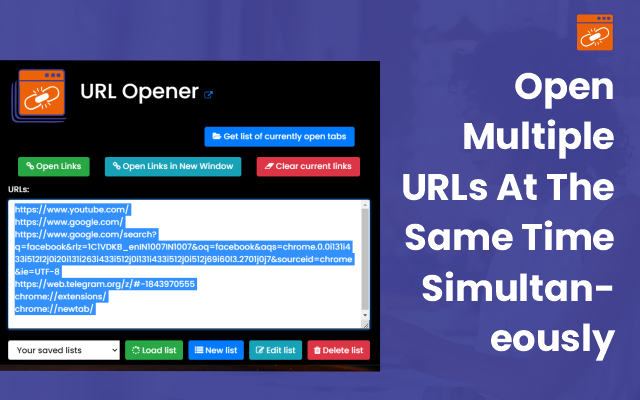

Say goodbye to the tedious task of copying and pasting individual URLs. Introducing the Ultimate URL Opener extension, a game-changer for SEO experts, researchers, and list builders. This powerful, user-friendly tool transforms how you manage and open multiple URLs, making your workflow seamless and efficient. Just paste your URLs, click a button, and watch the magic happen.
Gone are the days of tab overload and cluttered browsers. With the URL Opener Chrome extension, you can open unlimited URLs simultaneously, centralizing your tasks and boosting your productivity like never before. Whether you're compiling lists, conducting research, or managing multiple websites, this extension streamlines your processes and optimizes your workflow.
Elevate your work experience and embrace a smarter way of managing URLs. Unlock boundless potential and discover the effortless efficiency of the Ultimate Bulk URL Opener extension. Say hello to a new era of productivity and bid farewell to the time-consuming process of opening URLs individually. Welcome to your new, streamlined digital workspace.
